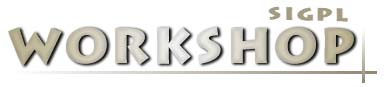

 한국 프로그래밍 언어 관련 연구의 현재1999년 2월 22일 ~ 23일
|
|
새해 건강하시고 복 많이 받으시길 기원합니다.
한국정보과학회 프로그래밍언어연구회에서는 국내에서 진행되고 있는
프로그래밍언어 및 관련 분야 연구의 현재를 정리해보는 워크샵을 "한국
프로그래밍 언어 관련 연구의 현재" 라는 주제로 1999년 2월 22 - 23일에
걸쳐 대전 한국과학기술원에서 개최하고자 합니다.
최근 프로그래밍 언어는 전통적인 분야 뿐만 아니라 여러 다양한 관련 분야와의
접근을 통해서 그 영역이 확대되고 있읍니다. 특히 소프트웨어 공학 및 인터넷과
연관되어 괄목할 만한 성장을 거듭하고 있읍니다. 본 연구회에서는 현재 국내에서
전개되고 있는 이러한 분야의 흐름을 파악하고 앞으로 전개될 발전에 대비하는
뜻에서 국내 프로그래밍 언어 및 관련 분야의 연구에 대한 논의의 장을 마련하고자
합니다. 이번 워크샵을 계기로 프로그래밍 언어와 관련 분야에 대한 활발한
의견 교환이 이루어질 수 있기를 기대합니다. 특히 국내 산업체에서 프로그래밍
언어의 역할에 대한 경험이나 요구사항에 대한 논의를 고대합니다.
이번 워크샵에서는 프로그래밍 언어에 대한 정형적인 접근법을 중심으로 2회의
튜토리얼과 다양한 분야에 걸쳐서 13 편의 논문 발표가 있읍니다.
아무쪼록 이번 워크삽이 프로그래밍 언어 및 관련 분야의 활발한 연구 교류 및
협동 작업의 초석이 되기를 바랍니다. 최 광 무 |